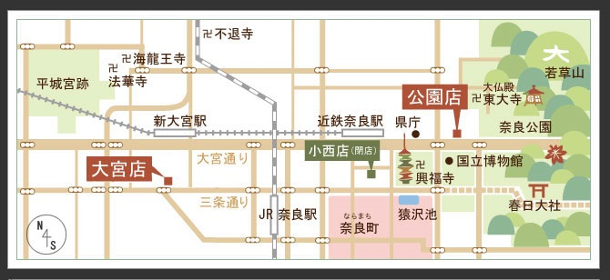
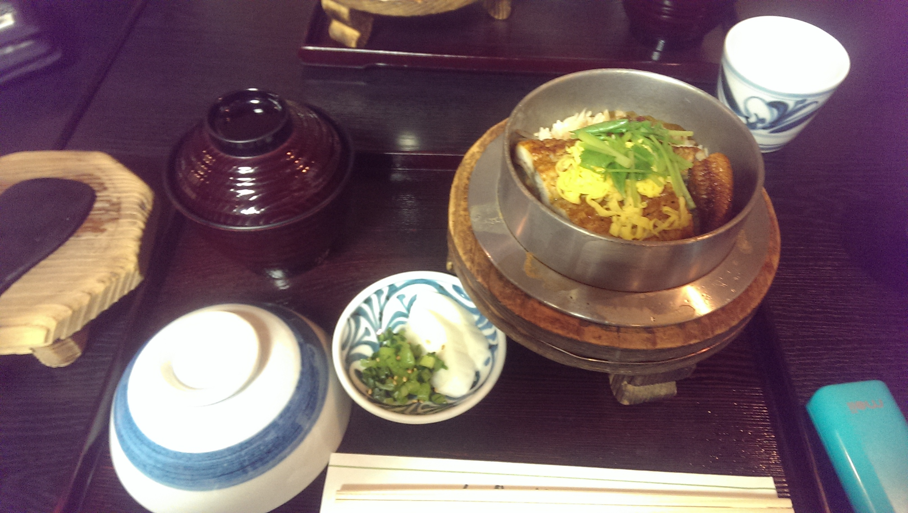
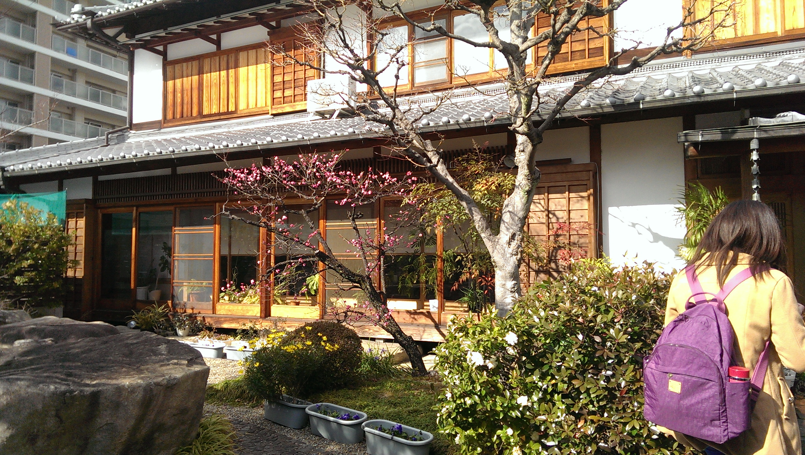
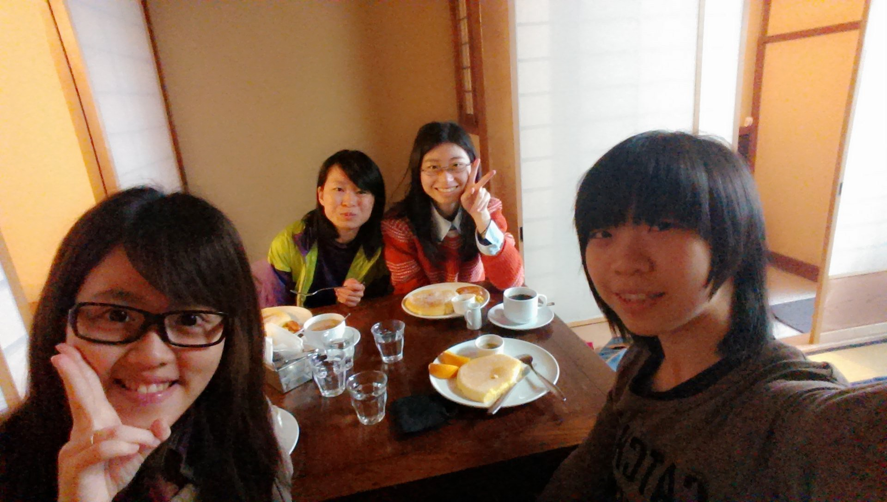
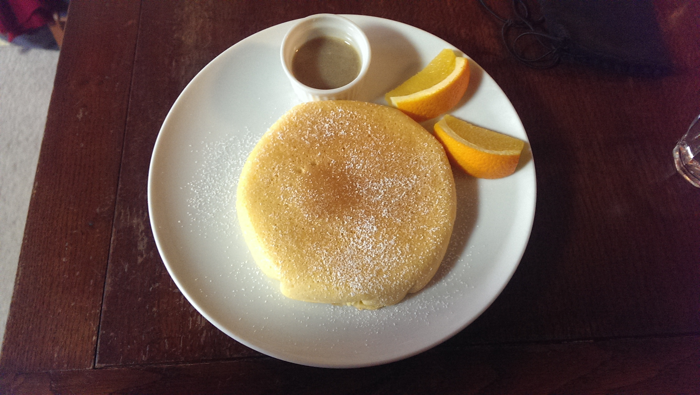
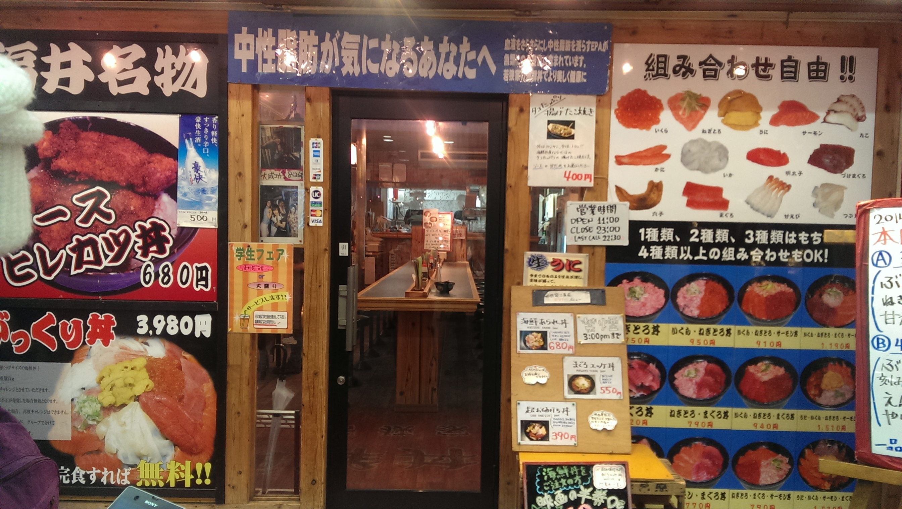
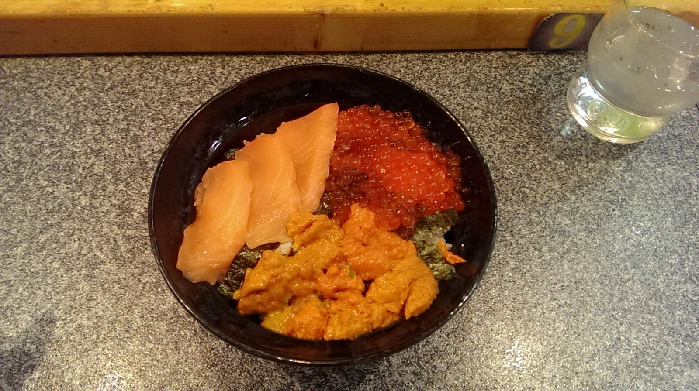

食記
奈良
志津相(公園店)位在奈良公園旁，我則是在距離較遠的志津香(大宮店)用餐

志津香(大宮店)


到了奈良，不能不吃的釜飯，也就是台灣人口中的鍋巴飯，吃起來帶有淡淡焦香，鰻魚煮得軟嫩，可以連刺咀嚼吞入
京都
カフェラインベック鬆餅店


跟一群好朋友到カフェラインベック吃早餐，燈光美氣氛佳
鬆餅還有其他口味可以選，像是香蕉、草莓口味
新京極
わかさや若狹家


到了新京極，不只好逛、好買，好友許多美食等著我們大快朵頤
必吃的是 【 若狹家 海鮮丼 】